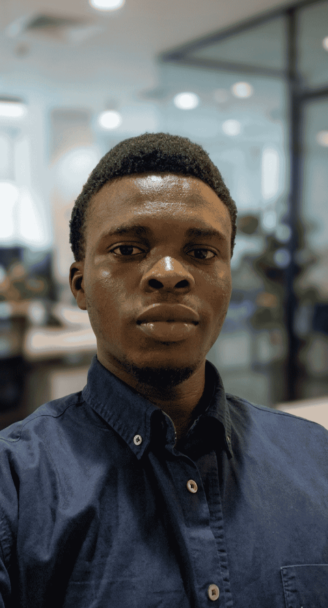

Aspiring Chartered Accountant (ICAN) with a background in audit and public-sector finance, building data analytics skills in SQL, Power BI, and Tableau.

I started out studying Cooperative Economics and Management at Ekiti State University, where an early internship in audit at Adekola Isafiade & Co. gave me my first real look at how numbers tell the story of a business — and how much patience it takes to get that story right. That curiosity about "what the data actually says" never left, even as my path widened beyond pure accounting.
Alongside my academic work, I served as Public Relations Officer for FINSA, which sharpened a different muscle entirely: communicating clearly to people who don't necessarily speak the language of figures. That's a skill I now lean on constantly — a dashboard is only useful if someone outside the spreadsheet can understand it.
After graduating, I completed my NYSC internship at the Lagos Internal Revenue Service (LIRS), working closer to large-scale, real-world financial data than I ever had in school. Reviewing complex tax compliance documentation, validating financial records — it pushed me toward formal data analytics training to go from "I can read the numbers" to "I can build the tools that read them for you."
I'm currently an ICAN student, working toward becoming a Chartered Accountant while continuing to build analytics projects in SQL, Power BI, Tableau, and Excel. I like sitting at that intersection: technically rigorous enough for finance, practical enough to ship. This portfolio is where that shows up.
Institute of Chartered Accountants of Nigeria
View certificate ↗Institute of Chartered Accountants of Nigeria
View certificate ↗Began undergraduate studies in Cooperative Economics and Management.
First hands-on exposure to financial auditing, vouching, and reconciliation work.
Awarded the Accounting Technician Scheme West Africa qualification by ICAN.
Led communications and stakeholder engagement for the organization.
Completed B.Sc. in Cooperative Economics and Management.
Reviewed tax compliance documentation and validated financial records in a public-sector setting.
Actively pursuing chartered accountancy while building data analytics projects.
© Oladele Jesudamilola · oladelejesudamilola02@gmail.com